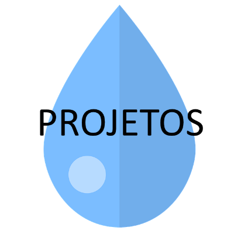
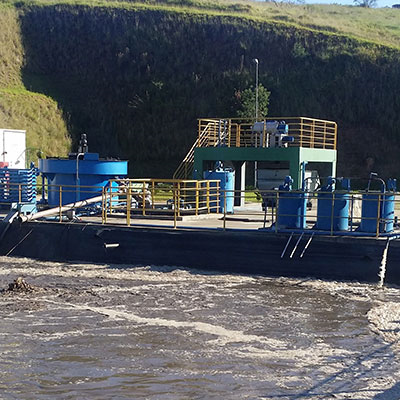
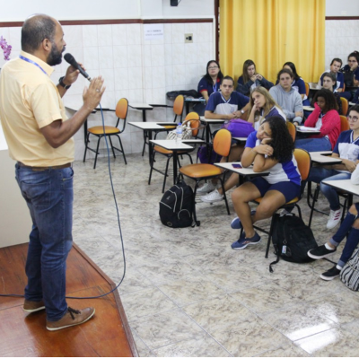
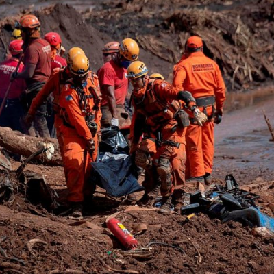

Projetos |
 |
Nossos projetos variam entre ajudar familias em desastres, tratamento da agua e a conscientização em escolas. |
|  | Tratamento da Agua |
Estamos reunindo forças monetaria e estudantil para desenvolver e aprimorar sistemas capazes de tratar aguas de rios, lagos e mares. |
Conscientização em Escolas |
 |
Nós acolhemos uma serie de voluntarios que se disponibilizaram para discutir sobre a importancia da conscientização da preservação e economia da agua em escolas de ensino médio e fundamental. |
|  | Ajuda em Brumadinho |
Apos o acidente que ocorreu em Brumadinho, muitas ONGS e instituições se reuiniram em prol de uma mão amiga as vitimas. Nós do Mundo Azul nao ficamos de fora! |